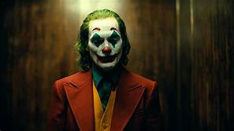

Batman is a superhero who appears in American comic books published by DC Comics. The character was created by artist Bob Kane and writer Bill Finger, and debuted in the 27th issue of the comic book Detective Comics on March 30, 1939.
Batman's secret identity is Bruce Wayne, a wealthy American industrialist. As a child, Bruce witnessed the murder of his parents, Dr. Thomas Wayne and Martha Wayne, which ultimately led him to craft the Batman persona and seek justice against criminals. He resides on the outskirts of Gotham City in his personal residence, Wayne Manor. Wayne averts suspicion by acting the part of a superficial playboy idly living off his family's fortune and the profits of Wayne Enterprises, his inherited conglomerate. He supports philanthropic causes through his nonprofit Wayne Foundation, which in part addresses social issues encouraging crime as well as assisting victims of it, but is more widely known as a celebrity socialite. In public, he frequently appears in the company of high-status women, which encourages tabloid gossip. Although Bruce Wayne leads an active romantic life, his vigilante activities as Batman account for most of his time
Batman's butler, Alfred Pennyworth, first appeared in Batman #16 (1943). He serves as Bruce Wayne's loyal father figure and is one of the few persons to know his secret identity. Alfred raised Bruce after his parents' death and knows him on a very personal level. He is sometimes portrayed as a sidekick to Batman and the only other resident of Wayne Manor aside from Bruce. The character "[lends] a homely touch to Batman's environs and [is] ever ready to provide a steadying and reassuring hand" to the hero and his sidekick.
The informal name "Batman family" is used for a group of characters closely allied with Batman, generally masked vigilantes who either have been trained by Batman or operate in Gotham City with his tacit approval. They include: Barbara Gordon, Commissioner Gordon's daughter, who has fought crime under the vigilante identity of Batgirl and, during a period in which she was confined to a wheelchair due to a gunshot wound inflicted by the Joker, the computer hacker the Oracle; Helena Bertinelli, the sole surviving member of a mob family turned vigilante, who has worked with Batman on occasion, primarily as the Huntress and as Batgirl for a brief stint; Cassandra Cain, the daughter of professional assassins David Cain, and Lady Shiva, who succeeded Bertinelli as Batgirl.
Batman faces a variety of foes ranging from common criminals to outlandish supervillains. Many of them mirror aspects of the Batman's character and development, often having tragic origin stories that lead them to a life of crime. These foes are commonly referred to as Batman's rogues gallery. Batman's "most implacable foe" is the Joker, a homicidal maniac with a clown-like appearance. The Joker is considered by critics to be his perfect adversary, since he is the antithesis of Batman in personality and appearance; the Joker has a maniacal demeanor with a colorful appearance, while Batman has a serious and resolute demeanor with a dark appearance. As a "personification of the irrational", the Joker represents "everything Batman [opposes]". Other long-time recurring foes that are part of Batman's rogues gallery include Catwoman (a cat burglar anti-heroine who is an occasional ally and romantic interest), the Penguin, Ra's al Ghul, Two-Face, the Riddler, the Scarecrow, Mr. Freeze, Poison Ivy, Harley Quinn, Bane, Clayface, and Killer Croc, among others. Many of Batman's adversaries are often psychiatric patients at Arkham Asylum.